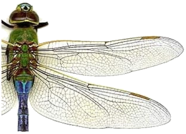

Tema 5. El tórax y las alas

• El cuello
• Áreas del tórax
• Esternón, Pleura y Tergo
• Alas. Venas y venación
• La articulación alar
• Las áreas del ala
• Los músculos de las alas
• Formación y desarrollo de las alas
• Origen filogenético de las alas
Capítulo 9. El tórax (texto)
Capítulo 10. Las alas (texto)
Presentación. Tórax y alas
Lecturas complementarias:
• Dickinson, M. 2001. Solving the Mystery of Insect Flight.
• Dickinson, M. 2006. Insect Flight.
• Floreano, D. et al. 2009. Flying Insects and Robots.
• Friedrich F. & R.G. Beutel. 2008. The thorax of Zorotypus.
• keller, R.A. et al. 2014. Evolution of thorax architecture in ants.
• Koeth, M. et al. 2012. The thoracic skeleto-muscular system of Mengenilla.
• Sudo, S. et al. 2005. Wing Characteristics of Flying Insects.
• Tórax. Revisión bibliográfica por Isabel Salazar (2019).